Camera footage
You see the pipe condition before we leave
When a sink backs up or the laundry drain gurgles, you need drain cleaning Plant City FL residents can count on. QuickFlow Plumbing has cleared lines across Hillsborough County since 2001, using drain snakes, hydro jetting and camera inspection to find the real cause, not just the symptom. We serve homeowners, landlords and business owners in 33563, 33565 and 33566 with same-day drain unclogging in Plant City and upfront pricing before we start.
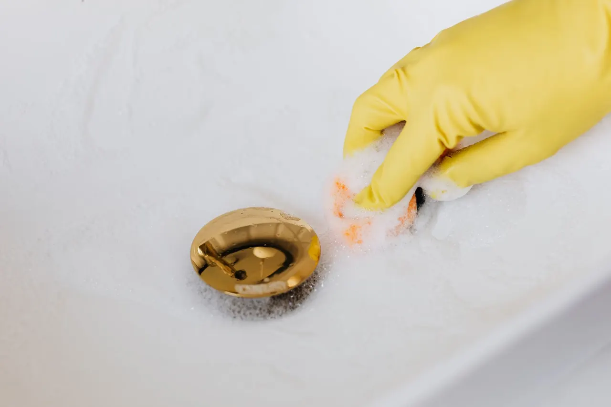
Every drain call includes the diagnostic work, the clearing and the verification. If the job turns into something bigger, like a pipe repair or a sewer line replacement, we quote that separately and you decide before we proceed.
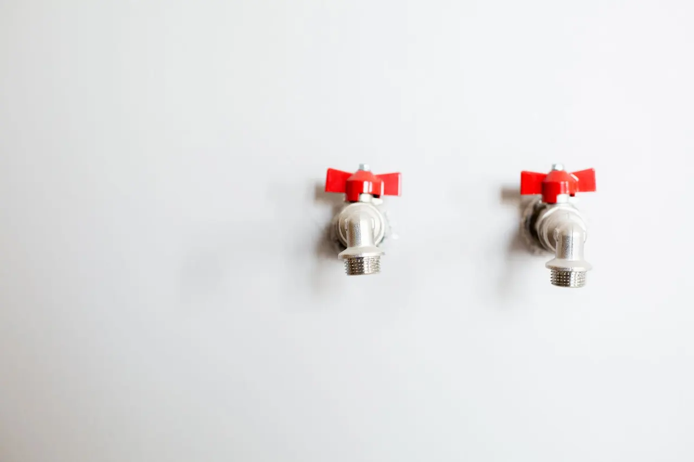
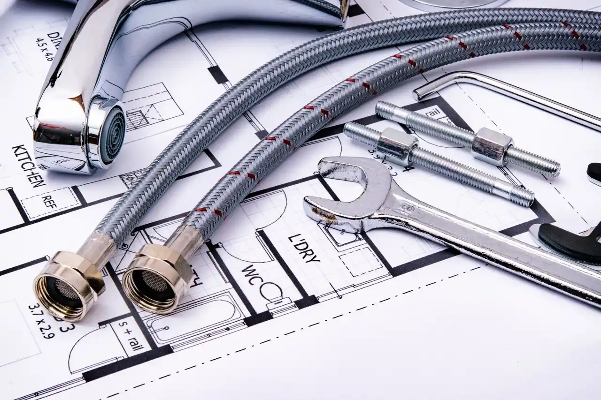
We clear kitchen, bath, laundry and main line clogs for homeowners and tenants across Plant City. Every visit includes a camera check so you see the pipe condition before we pack up.
We keep grease lines, floor drains and main sewer lines flowing for restaurants, shops and multi-family properties. Work is scheduled around your operating hours so you do not lose a service.
Drain cleaning Plant City FL is the process of removing the buildup, grease, hair, soap scum or root mass that narrows or blocks a drain line, then flushing the pipe so it flows at full diameter again. We start by pulling the strainer and checking the trap, then run a drain snake or hydro jetting machine through the branch line. If the blockage is in the main sewer, we camera the line to see whether it is grease, scale or root intrusion. A pressure gauge on the jetter tells us whether the line is clearing or still restricted.
Plant City homes deal with a specific mix of problems. Older houses near Historic Downtown still have cast iron or clay laterals that scale up and catch debris. Newer builds off Alexander Street often have long, flat kitchen runs where grease cools and hardens before it reaches the main. Add sandy soil and heavy summer rain, and a slow drain can turn into a sewage backup fast. That is why we treat every clogged drain repair Plant City call as a diagnostic job first, not a quick plunge and gone.
We clear the line, camera it and show you the footage before we leave.
Every drain call follows the same five steps. You know what is happening, what it costs and what we found before we leave the property.
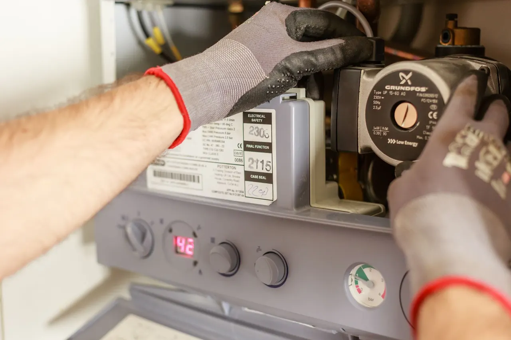
A cable auger used to break through soft clogs in branch lines and traps. We carry manual and powered versions so we can clear a bathroom sink or a long kitchen run without pulling the fixture.
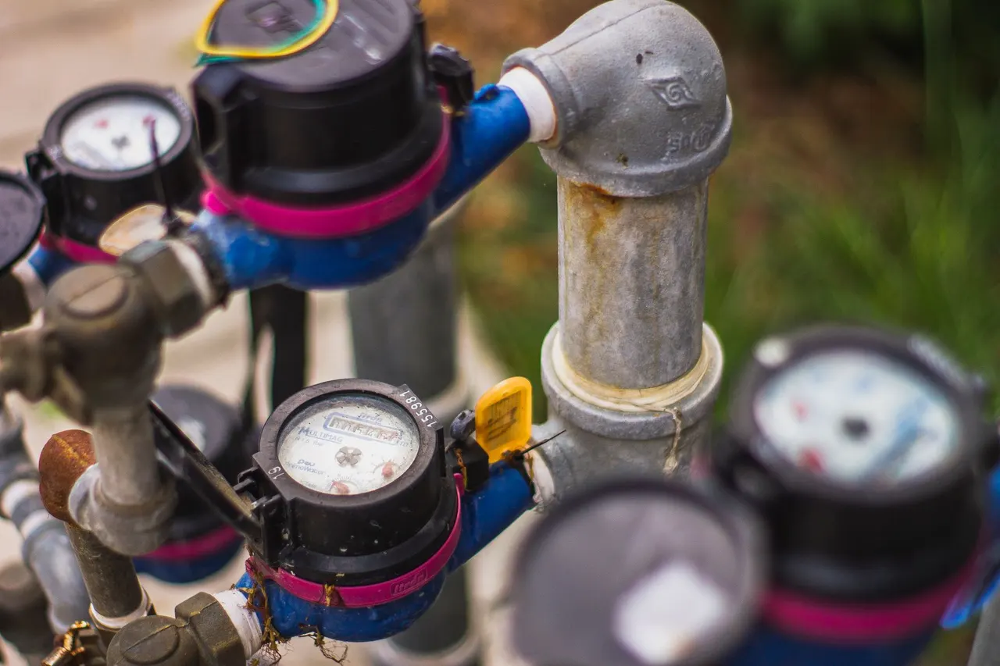
High-pressure water jetter that scours grease, scale and root mass off the full pipe wall at 3,000 to 4,000 PSI. Used on main lines and grease-heavy commercial drains where snaking alone will not last.
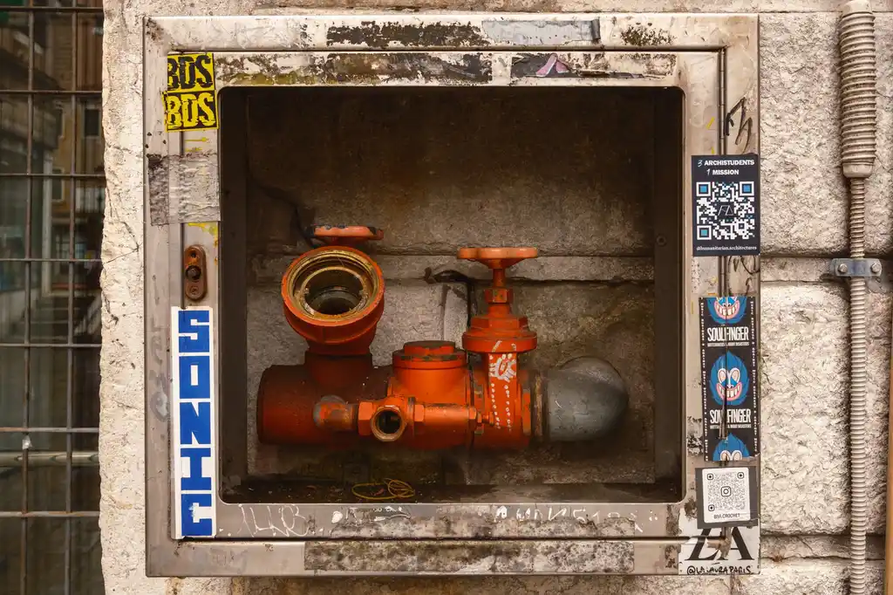
Push camera that lets us see inside the pipe after clearing. We use it to confirm flow, locate cracks, bellies and root intrusion, and show you the footage on the monitor before we leave.
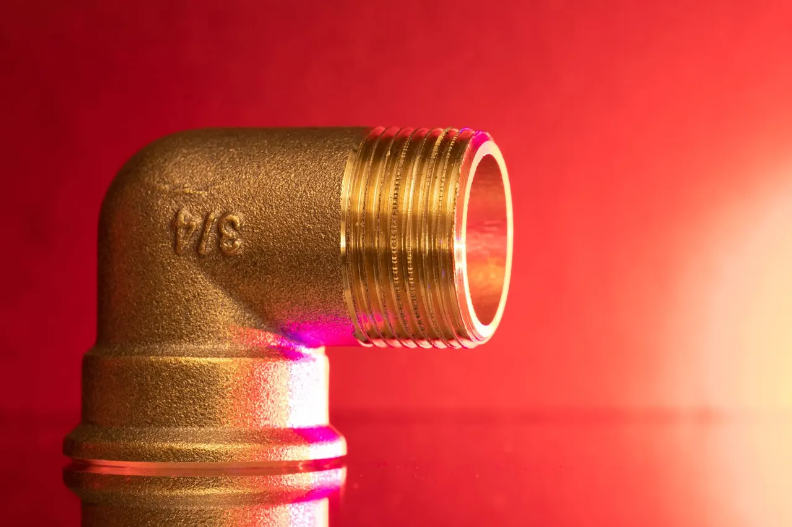
Standard hand tools for pulling traps, opening cleanouts and clearing simple clogs. Every truck carries them so we can handle a small job without dragging out the heavy equipment.
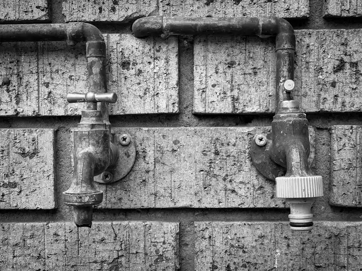
Mounted on the jetter to monitor line pressure during hydro jetting. It tells us whether the line is clearing or still restricted, so we know when to stop and camera the pipe.
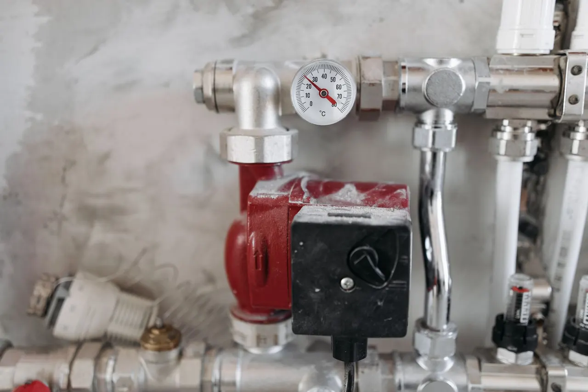
Cordless lights, cameras and diagnostic tools used to inspect under cabinets, inside cleanouts and around fixtures without tearing into walls or floors.
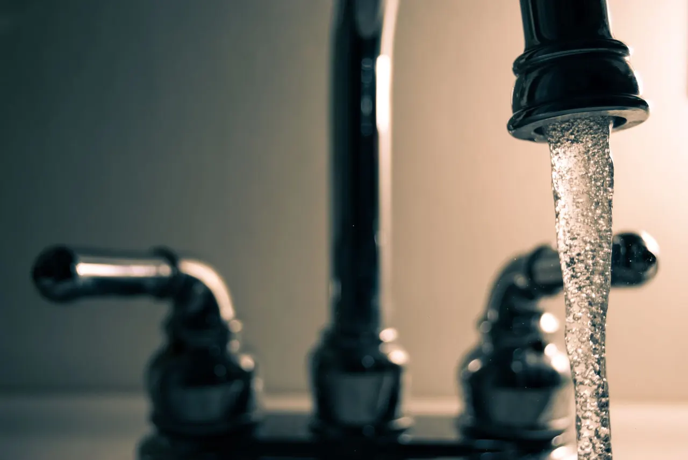
On any main line or repeat clog, we camera the pipe before and after clearing. This tells us whether the issue is grease, scale, root intrusion or a structural defect, and it prevents us from clearing a line that actually needs a repair.
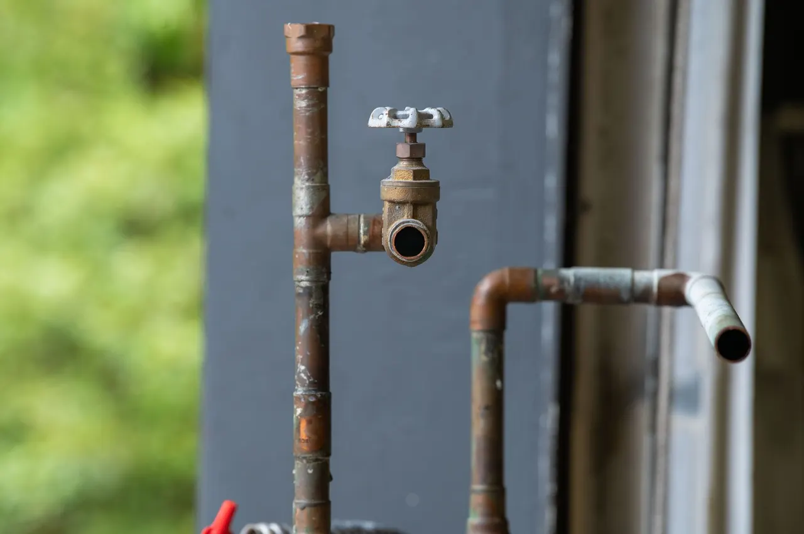
We jet until the pipe wall is clean, not just until water flows. That means running the jetter from the cleanout at full pressure and verifying with a camera. Lines cleaned this way stay clear two to three times longer than snaked lines.
We treat holiday-week drain calls as priority jobs and hold same-day slots. A technician arrives with a snake and jetter, clears the line and tests it with hot water before leaving. Most kitchen clogs are cleared in under an hour. You cook, clean and host without a sink full of standing water. The line flows normally and you know what caused the clog so it does not repeat next year.
We run a camera through the main sewer line, document the condition and identify any root intrusion, cracks or bellies. You get footage and a written summary you can use in negotiations or to plan a repair. You know exactly what you are buying. If the line needs work, you have a real number to ask the seller to address before closing.
We schedule after-hours jetting so you do not lose a service. The crew jetted the line from the cleanout, cameras it and sets up a quarterly maintenance schedule to keep grease from building back up. The line runs clear through service, and the quarterly schedule keeps it that way. No emergency closures, no grease on the kitchen floor.
We diagnose the line, clear the clog and camera it to find the root cause. If the issue is a failing pipe or a root intrusion, we quote the repair and coordinate with you and the tenant on scheduling. The tenant has a working bathroom, you have documentation of the fix, and the recurring clog is resolved at the source instead of patched again.
Plant City sits on a mix of older housing stock and newer development, and that shapes how we approach drain work. Homes near Historic Downtown Plant City often have original cast iron or clay laterals that have scaled up over decades. Newer builds on the east side tend to have long, flat kitchen runs in PVC pipe where grease cools before it reaches the main. The sandy soil and mature oak canopy around town push roots into older sewer lines, especially after a wet summer. We camera every main line before we jet it, because a root mass that looks like a simple clog can hide a cracked pipe underneath. If you are searching for affordable drain cleaning in Plant City, we quote the price upfront and tell you whether a snake will do the job or whether the line needs jetting. We also work to Hillsborough County code on every repair, so the fix passes inspection and holds up.
A homeowner in Historic Downtown Plant City had been pouring drain cleaner down a slow kitchen sink for two years. The sink finally stopped draining completely, and standing water sat in the basin overnight. The trap was packed with hardened grease and the branch line was coated down to a pencil-width opening.
We pulled the trap, snaked the branch line and hydro jetted the run back to the main. The camera showed clean pipe wall and full flow. The sink now drains in under 10 seconds, and the homeowner has not had a backup since.
Pour a kettle of hot water down the kitchen drain once a week and avoid dumping cooking grease. If the drain slows again, call before using chemical cleaners, which harden grease instead of removing it.
A rental property near Walden Lake had three backups in six months. Each time, a hand snake cleared it for a few weeks and the clog returned. Tenants were frustrated and the owner was losing rent. The camera showed a root mass entering through a joint about 30 feet from the cleanout.
We hydro jetted the main line at 4,000 PSI, cutting the roots back to the pipe wall and flushing the debris out. The camera confirmed clear flow and showed the joint where roots had entered. The owner scheduled a follow-up camera check in six months.
Root intrusion returns if the entry point is not repaired. We recommend a camera check every six to twelve months and a permanent repair if the joint continues to let roots in.
A family in Country Hills had water on the laundry room floor every wash day. The standpipe overflowed during the spin cycle and the drain gurgled for minutes afterward. The trap and branch line were coated with lint paste and detergent residue that had built up over years.
We cleared the standpipe and trap, then jetted the branch line to strip the lint coating off the pipe wall. We also checked the standpipe height against the Uniform Plumbing Code and confirmed it was correct. The drain now handles the full discharge without overflowing.
Run a hot water cycle through the washer once a month with no clothes to flush residual detergent. Use a mesh lint trap on the discharge hose and clean it after every load.
Most drain calls fall into a handful of categories. Here is what we see most often and how we handle each one.
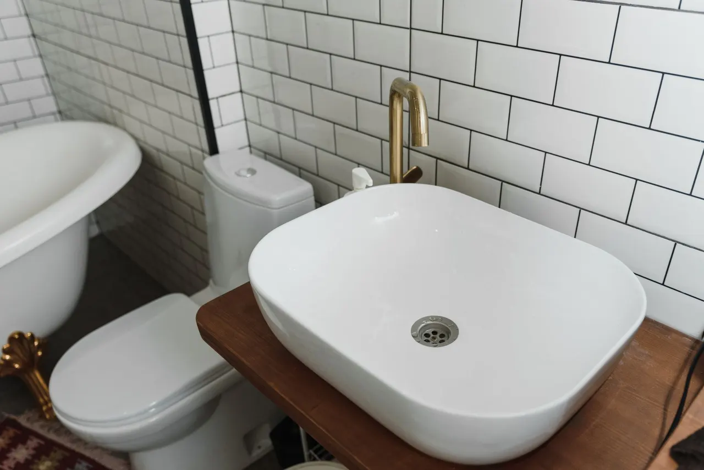
We pull the trap, snake the branch line and, if grease has coated the pipe wall, hydro jet the run back to the main. A kitchen sink drain cleaning Plant City call usually takes under an hour and restores full flow. Grease and food particles cool inside the pipe, narrow the opening and eventually block it completely. Standing water in the sink breeds bacteria and can overflow into the cabinet below.
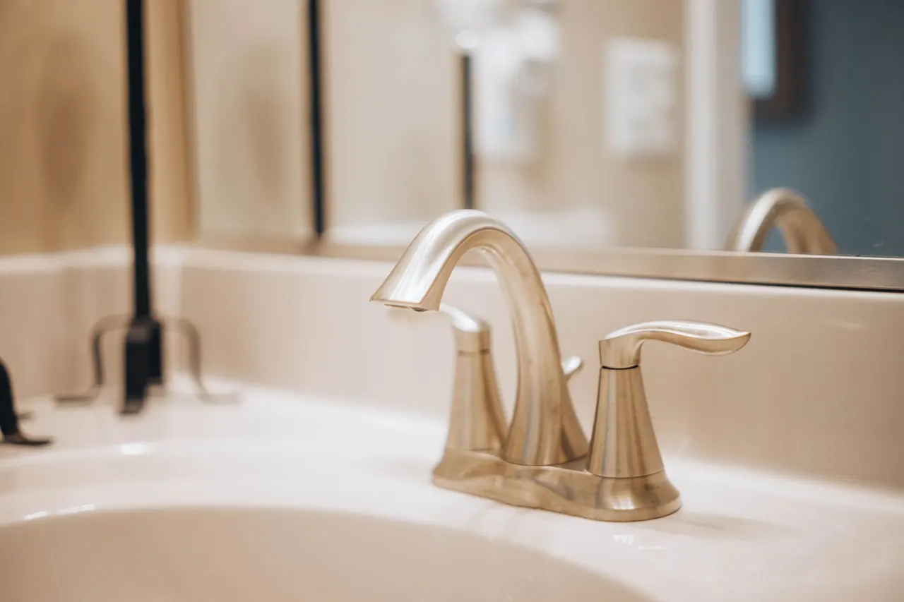
We locate the nearest cleanout, jet the main line and camera it to find the cause. Common culprits are root intrusion in sewer lines, a bellied pipe or heavy scale in older cast iron. We show you the footage and quote any repair. When a tub, toilet and sink all back up together, the clog is in the main sewer line, not a branch. This is a sewage exposure risk and can damage flooring and drywall if it continues.
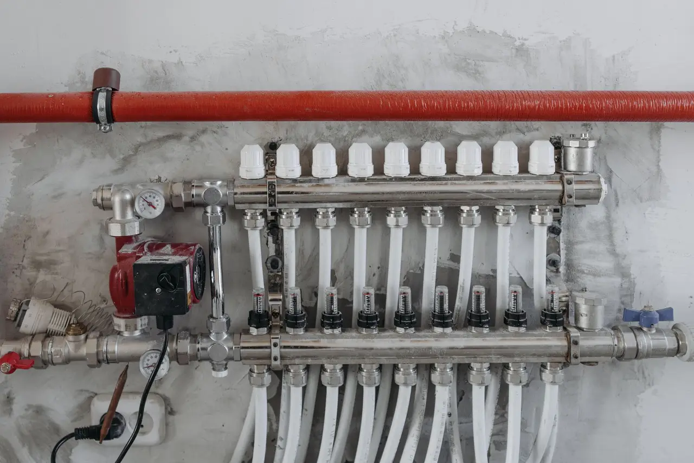
We pull the toilet, snake the branch line and inspect the flange and wax ring. If the ring is failing, we replace it while the toilet is up. That stops the clog cycle and prevents water damage under the tile. A toilet that clogs weekly usually has something wrong beyond the bowl, like a partial blockage in the branch line or a failing wax ring that lets water seep under the floor.
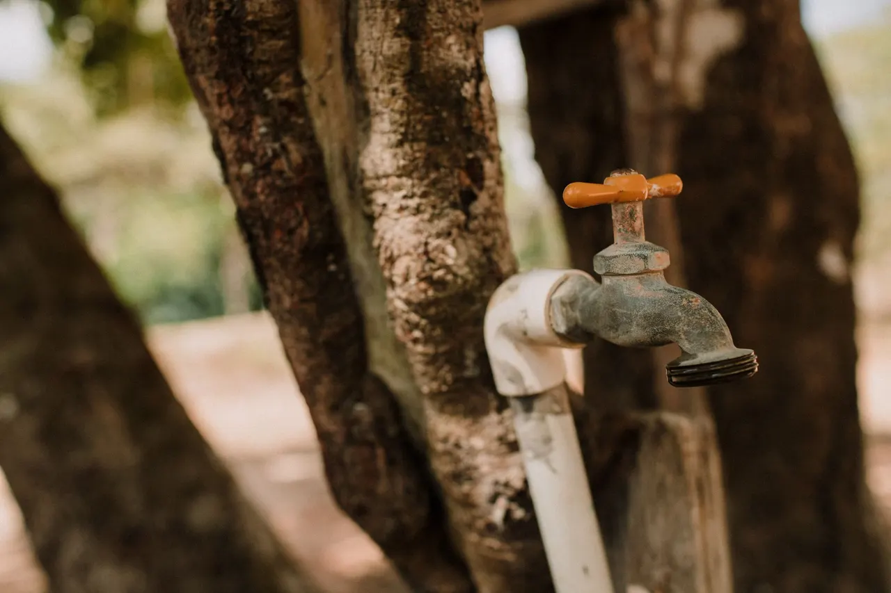
We clear the standpipe and trap, then jet the branch line to remove the lint paste coating the pipe wall. We also check the standpipe height against the Uniform Plumbing Code so the discharge does not siphon or overflow. Lint and detergent residue build up in the standpipe and trap, and the high-volume discharge from a washing machine overwhelms the restricted line. Water ends up on the floor every wash day.
Most drain cleaning near me Plant City FL calls get a technician at the door the same day, often within a few hours. We carry snakes, jetters and cameras on every truck, so we can diagnose and clear in one visit instead of scheduling a return trip. That matters when a toilet is backing up and you have guests arriving.
A cable snake punches a hole through a clog. Hydro jetting drain cleaning Plant City FL uses 3,000 to 4,000 PSI of water to scour the full pipe wall, stripping grease and scale back to bare metal or PVC. Lines jetted properly stay clear two to three times longer than lines that were only snaked.
Before we pack up, we run a camera down the line and show you the footage. You see the pipe, the flow and any remaining issue like a cracked section or offset joint. No guessing, no paying twice for the same clog. If a repair is needed, you know exactly where and why.
A slow drain that keeps backing up warps cabinet bases, stains tile grout and shortens the life of your Moen or Delta faucet cartridges. Clearing the line early stops water from sitting where it should not. We also check the wax ring on any toilet we pull, so you are not trading one leak for another.
Drain cleaning pricing in Plant City depends on where the clog is, what is causing it and what equipment is needed to clear it. A bathroom sink or tub clog is a different job than a main sewer line packed with roots. We quote a flat price before we start, and if the job changes once we are in the line, we tell you and re-quote before continuing. Typical 2026 pricing for residential drain cleaning runs $180 to $450, with main line hydro jetting running $400 to $850 depending on length and access. Commercial grease line service is quoted per line and per schedule.
What your estimate is based on
$180 - $850 depending on scope The price covers diagnosis, clearing, camera verification and cleanup. You see the footage before we leave, so you know the line is clear and whether a future repair is coming. That is cheaper than clearing the same clog three times.
Clear records you can keep and share.
You see the pipe condition before we leave
Given before any work begins
What we found and what to watch for
A snake punches a hole through a clog so water can pass. Hydro jetting scours the full pipe wall and removes the buildup that caused the clog in the first place.
A single fixture with a soft clog, like hair in a bathroom drain, clears fine with a snake. The line flows and the clog does not return if nothing else is in the pipe.
Grease, scale and root masses coat the pipe wall and catch new debris. Snaking leaves that coating in place, so the clog returns. Jetting removes it and the line stays clear longer.
The camera shows whether the line is actually clean or just flowing. It also reveals cracks, bellies and root entry points that will cause the next clog if they are not addressed.
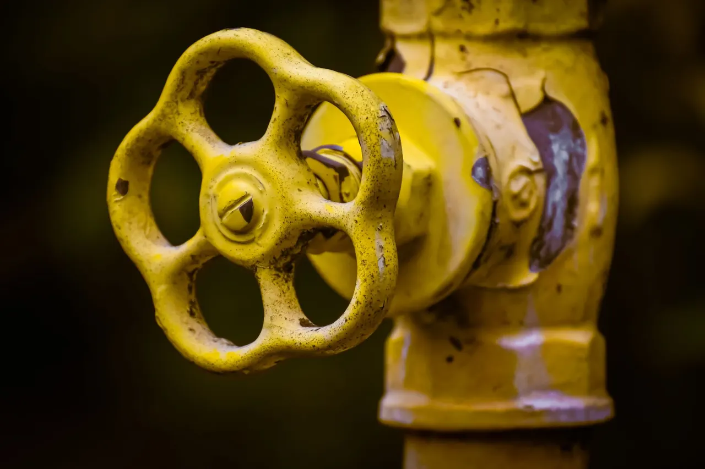
Outside these areas? Call 813-548-5096 and ask if we can reach you. 8135485096
Most residential drain cleaning jobs in Plant City run $180 to $450 in 2026, depending on where the clog is and how it is cleared. A bathroom sink or tub clog is usually on the low end. A main line that needs hydro jetting runs $400 to $850. We quote the price before we start, and if the job changes once we are in the line, we tell you before we continue.
Repeat clogs almost always mean the line was never fully cleared, or there is a structural issue like root intrusion, a bellied pipe or heavy scale. Sandy soil and mature trees around Plant City push roots into older clay and cast iron laterals. If we snake the same drain twice in a year, it is time to camera the line and find the real cause instead of clearing it again.
Yes. We hold same-day slots for drain calls and most customers get a technician within a few hours. If you call before early afternoon, we can usually be there the same day. Main line backups and sewage emergencies get priority. Call 813-548-5096 and we will give you a real arrival window, not a four-hour maybe.
We do. Hydro jetting drain cleaning Plant City FL customers ask for is the best option for grease, scale and root-heavy lines because it scours the full pipe wall instead of punching a hole. We jet from the cleanout at 3,000 to 4,000 PSI, then camera the line to confirm it is clear. Not every drain needs jetting, and we will tell you if a snake will do the job for less.
We quote the price before we start, show you the camera footage when we are done, and stand behind the work. Call QuickFlow Plumbing at 813-548-5096 for same-day drain service in Plant City, FL.